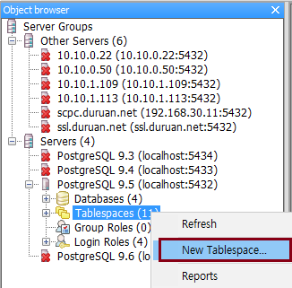
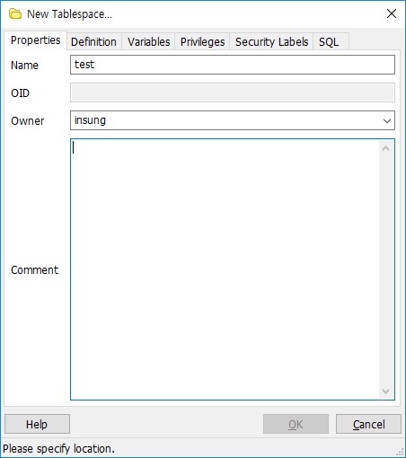
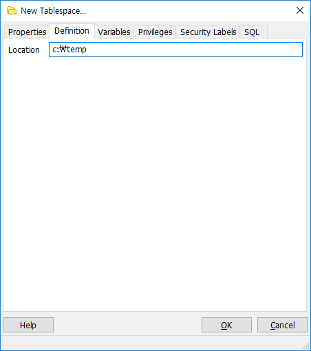
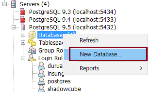
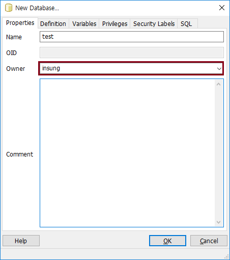
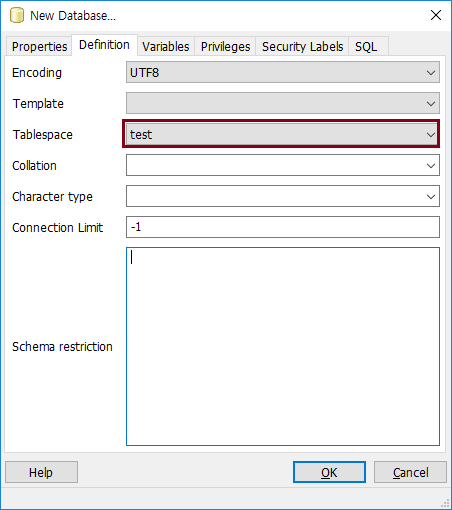
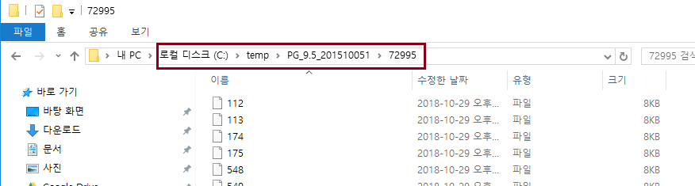
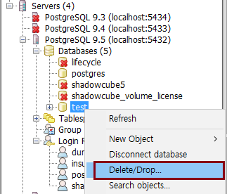
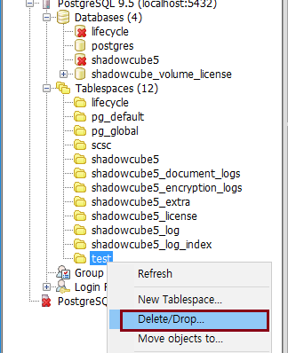

PostgreSQL 데이터베이스 구조
Tablespace
-
Tablespace 를 통해 데이터베이스 파일을 저장할 수 있는 위치를 정의할 수 있음
-
Tablespace 를 활용함으로써, 파일이 저장될 위치를 변경하여 리소스를 분산할 수 있음
Tablespace 생성 방법
-
pgAdmin3 > Database > Tablespaces > New Tablespace... 선택

-
Properties 탭 > Name 입력, Owner 선택

-
Definition 탭 > 경로 입력 (해당 경로에 권한 필요, 해당 경로는 empty 여야 함)

Database 생성 시, Tablespace 지정하는 방법
-
pgAdmin3 > Database > New Database... 선택

-
Properties 탭 > Name 입력, Owner 선택

-
Definition 탭 > Tablespace 를 test 로 지정한 후 OK 클릭

-
여기서 Tablespace 지정은 해당 Database 의 기본 Tablespace 를 지정하는 것임
-
해당 Database 에서 테이블 생성 시, Tablespace 를 지정하지 않으면 여기서 지정한 Tablespace 로 생성이 됨
-
해당 Database 에서 테이블 생성 시, 다른 Tablespace 를 지정할 수 도 있음
Tablespace 디렉토리 구조 및 특징
-
Tablespace 를 생성하여, Database 를 생성하면 다음과 같은 구조로 디렉토리가 만들어진다.

-
PostgreSQL Version 디렉토리가 생성되고, Tablespace OID 값의 하위 디렉토리가 생성된다.
예) C:\temp\{PostgreSQL Version}\{Tablespace OID}
-
Tablespace 생성 시, 지정한 디렉토리에는 postgres 사용자가 write 할 수 있는 권한이 필요하다. (윈도우/리눅스 공통)
-
Tablespace 를 지정한 경로에 디렉토리가 없다면 수동으로 만들어 줘야 한다. (윈도우/리눅스 공통)
Table 생성 시, Tablespace 지정하는 방법
-
다음과 같이 쿼리를 작성한다.
CREATE TABLE test (
id integer,
name varchar(50),
description varchar(255)
) TABLESPACE test
Tablespace 삭제 방법
Tablespace 에 연결된 Database 가 있다면 삭제되지 않는다. test Database 를 먼저 삭제하고 Tablespace 를 삭제한다.
-
pgAdmin3 > Database > Delete/Drop... 선택

-
pgAdmin3 > Tablespaces > Delete/Drop... 선택

Let's Prcactice
-
여러 개의 Tablespace 와 한 개의 Database 를 만들어보고, 그 Tablespace 들을 사용는 테이블을 만들어 보자.
-
Tablespace 에 Database, Table 을 만들었을 때, 디렉토리는 어떻게 구성되는지 확인해 보자. 그리고 그 디렉토리 안에 어떤 파일들이 있는지 확인해 보자.
처음으로
이전
다음